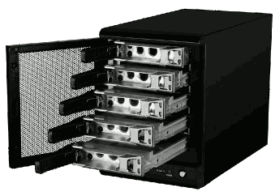
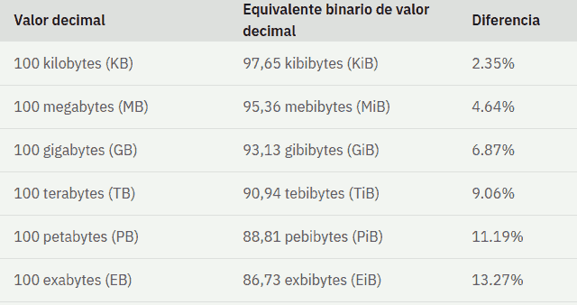
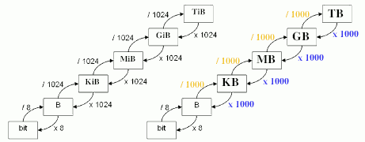
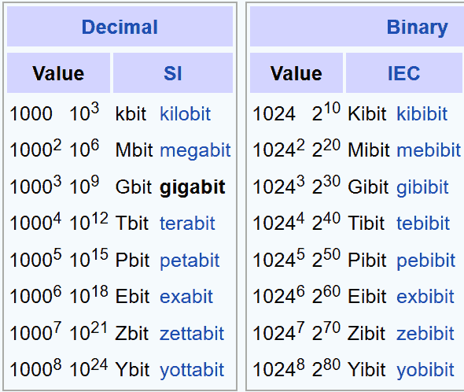

En términos simples, los pilares básicos del almacenamiento de datos son dos: la forma que toman los datos y los dispositivos en los que se registran y almacenan.
almacenamiento
1. Almacenamiento de datos
Almacenamiento de datos
Los dispositivos de almacenamiento de datos se dividen en dos categorías principales:
- El almacenamiento de conexión directa o DAS (Direct-Attached Storage), funciona conectado directamente al ordenador que lo utiliza o al servidor, pero no conectado a la red. Los dispositivos DAS incluyen disquetes, discos ópticos como los discos compactos (CD) y los discos de video digital (DVD), unidades de disco duro (HDD), unidades flash y unidades de estado sólido (SSD).
DAS se utiliza cuando se necesita un alto rendimiento y una gran capacidad de almacenamiento con una configuración sencilla y un bajo coste. Es una opción de almacenamiento práctica para las pymes que necesitan sistemas de almacenamiento sencillos y no necesitan compartir datos en toda la organización. - El almacenamiento en red permite que más de un ordenador acceda a él a través de una red, lo que es mejor para compartir datos y colaborar. Su capacidad de almacenamiento externo también lo hace más adecuado para copias de seguridad y protección de datos.
- Almacenamiento conectado a la red o NAS ( Network Attached Storage ): consiste en un contenedor de discos duros que incluye inteligencia adicional para el uso compartido y la autorización de archivos. Emplea la tecnología denominada matriz redundante de discos independientes (RAID, Redundant Array of Independent Disks), puede distribuir y duplicar datos almacenados a través de varios discos duros. Esta redundancia garantiza la resiliencia de los datos en caso de que falle alguna de las unidades de disco.
Resultan versátiles, flexibles y escalables. Permiten ampliar soluciones existentes a medida que aumentan los requisitos de almacenamiento. Suelen tener puertos USB para conectar impresoras. - Red de área de almacenamiento o SAN ( Storage Area Network ): red dedicada de dispositivos de almacenamiento que se utiliza para proporcionar un grupo de almacenamiento compartido al que pueden acceder varios ordenadores y servidores.
- Almacenamiento conectado a la red o NAS ( Network Attached Storage ): consiste en un contenedor de discos duros que incluye inteligencia adicional para el uso compartido y la autorización de archivos. Emplea la tecnología denominada matriz redundante de discos independientes (RAID, Redundant Array of Independent Disks), puede distribuir y duplicar datos almacenados a través de varios discos duros. Esta redundancia garantiza la resiliencia de los datos en caso de que falle alguna de las unidades de disco.
| NAS | SAN |
|
|
Tipos de dispositivos de almacenamiento
- Almacenamiento SSD y flash: es una tecnología de estado sólido que utiliza chips de memoria flash para escribir y almacenar datos. Abarcan desde unidades USB hasta matrices de nivel empresarial. Una unidad flash de disco de estado sólido (SSD) almacena datos mediante la memoria flash. En comparación con los HDD, un sistema de estado sólido no tiene partes móviles y, por lo tanto, tiene menos latencia. Dado que la mayoría de los SSD modernos están basados en flash, el almacenamiento flash es sinónimo de un sistema de estado sólido.
-
Unidad de disco flash SSD: unidad flash de disco de estado sólido (SSD).
-
Matriz de almacenamiento: combina varias unidades de disco para permitir el almacenamiento de datos basado en bloques. Separa el almacenamiento de las funciones de conexión y comunicación de red para proporcionar más capacidad que un grupo de servidores de archivos.
-
All flash array: usan solo memoria flash para el almacenamiento. Estas modernas arquitecturas están diseñadas para maximizar el rendimiento y la capacidad de almacenamiento, sin las limitaciones de las funciones heredadas de las redes de área de almacenamiento (SAN) SSD. Tienen una latencia ultrabaja y alta disponibilidad.
-
Almacenamiento NVMe: interfaz que se utiliza para acceder al almacenamiento flash a través de un bus de interconexión rápida de componentes periféricos (PCIe). NVMe permite miles de solicitudes paralelas en una sola conexión. Elimina la sobrecarga entre las aplicaciones y el almacenamiento y mejora significativamente el rendimiento.
-
- Almacenamiento en disco duro: utilizan hardware electromecánico para almacenar información digital. Son rentables e ideales para el almacenamiento a largo plazo y para archivos grandes. Los discos duros son vulnerables al daño físico con el tiempo y tienen problemas de latencia derivados de la movilidad de algunos componentes. Al igual que con los discos SSD también existen matrices de HDD que combinan varios discos para soluciones de mayor capacidad.
-
Almacenamiento híbrido: las unidades SSD y flash ofrecen un mayor rendimiento que las unidades de disco duro, pero pueden ser más caras. Muchas organizaciones adoptan un enfoque híbrido, combinando la velocidad del flash con la capacidad de almacenamiento de los discos duros. Una infraestructura de almacenamiento equilibrada permite a las empresas aplicar la tecnología adecuada para diferentes necesidades de almacenamiento.
-
Almacenamiento en el cloud (en la nube): ofrece una alternativa escalable y rentable para almacenar archivos, en discos duros o redes de almacenamiento locales. Los proveedores de servicios en el cloud, permiten guardar datos y archivos en una ubicación externa a la que se accede a través de la internet pública o una conexión de red privada específica. El proveedor aloja, protege, administra y mantiene los servidores y la infraestructura asociada, garantizando que tenga acceso a los datos siempre que los necesite.
-
Almacenamiento en el cloud híbrido: combina elementos del cloud público y privado. Con el cloud híbrido, las organizaciones pueden elegir en qué cloud almacenar los datos. Por ejemplo, para datos altamente regulados sujetos a estrictos requisitos de archivado y replicación, es más adecuados un entorno de cloud privado, mientras que los datos menos sensibles, se pueden almacenar en el cloud público.
Formas de almacenamiento de datos
Los datos se pueden registrar y almacenar de tres formas principales:
- Almacenamiento en archivos: es una metodología de almacenamiento jerárquica que se utiliza para organizar y almacenar datos. En otras palabras, los datos se almacenan en archivos, los archivos se organizan en carpetas y las carpetas se organizan bajo una jerarquía de directorios y subdirectorios.
- Almacenamiento en bloques: es una tecnología que se utiliza para almacenar datos en bloques. Luego, estos bloques se almacenan como piezas separadas, cada una con su identificador único. Los desarrolladores prefieren el almacenamiento en bloques para situaciones que requieren una transferencia de datos rápida, eficiente y fiable.
- Almacenamiento en objetos: es una arquitectura de almacenamiento de datos para manejar grandes cantidades de datos no estructurados. Estos datos no se pueden organizar fácilmente en una base de datos relacional, tradicional con filas y columnas. Algunos ejemplos: correo electrónico, vídeos, fotos, páginas web, archivos de audio, datos de sensores, y otros tipos de medios y contenido web, textual o no textual.
Unidades
Unidades de medida decimal y binaria para expresar el tamaño de los datos de almacenamiento.
Las unidades decimales como el kilobyte (KB), megabyte (MB) y gigabyte (GB) se utilizan comúnmente para expresar el tamaño de los datos. Las unidades de medida binarias incluyen el kibibyte (KiB), el mebibyte (MiB) y el gibibyte (GiB).
Comparación de unidades binarias y decimales y valores

Las unidades de medida binarias expresan el tamaño de los datos con mayor precisión. Si se compara el tamaño de 100 KB con 100 KiB, la diferencia es relativamente pequeña, 2,35%. Sin embargo, esta diferencia aumenta a medida que aumenta el tamaño de los valores de los datos. Si se compara el tamaño de 100 TB con 100 TiB, la diferencia es de 9,06%.

Suele utilizarse valores de base 2 para los valores de memoria y espacio en disco, y valores de base 10 para el espacio en discos duros físicos.

Activitat
- Una empresa dedicada a la fabricación de perfumes con 30 trabajadores, que trabajan sobre la misma información, acaba de tener un pequeño problema. El disco duro del servidor se ha averiado y han perdido toda la información que almacenaban en él (clientes, pedidos, fórmulas secretas de fabricación de productos, nóminas, etc). Afortunadamente, la empresa de recuperación de discos les ha dicho que podrán recuperar la información, pero que tardarán 48 horas. Así, que mientras recuperan los datos te han llamado a ti, asesor informátcio, y te han propuesto que montes un sistema que evite la pérdida de información en caso de avería de un disco. También quieren hacer copias de seguridad durante la noche, aprovechando que a esas horas no hay nadie trabjando. Las copias de seguridad deben de hacerse en un dispositivo externo con la idea de poder guardarlo en un lugar diferente a la fábica, para evitar pérdida de información en caso de alguna catástrofe o robo, pero no quieren hacer la copia en la nube para evitar que terceras personas puedan acceder a sus fórmulas secretas de fabricación de perfumes.
Elabora tu propuesta de solución y compártela con tus compañeros/as informáticas para seleccionar la más adecuada.
Tiempo: 15 minutos de búsqueda de información + 10 de intercambio de opiniones. - Ejercicios de conversión entre diferentes unidades de medida
- Bytes a Kilos:
- a. Convierte 5,000 bytes a kilobytes (KB).
- b. Convierte 8,192 bytes a KiB.
- c. Convierte 2,048 bytes a KiB.
- d. Convierte 4 KB a bytes.
- e. Convierte 2 Kilobytes a bits.
- Kilos a Megas:
- a. Convierte 2,000 KB a MB.
- b. Convierte 512 KiB a MiB.
- c. Convierte 16,384 KiB a MiB.
- d. Convierte 3 MiB a KiB
- e. Convierte 6 MiB a bytes
- f. Convierte 6 MB a bytes
- Megas a Gigas:
- a. Convierte 4 megabytes a gigabytes (gb).
- b. Convierte 128 MiB a GiB.
- c. Convierte 1,024 megabytes a gigabytes.
- d. Convierte 7 gigabytes (gb) a megabytes (mb)
- e. Convierte 5 GiB a KiB.
- f. Convierte 5 GB a KB.
- Gigas a Teras:
- a. Convierte 0.5 GB a TB
- b. Convierte 16 GB a TB.
- c. Convierte 2,048 GiB a TiB.
- d. Convierte 4 TiB a GiB.
- e. Convierte 1,5 TiB a MiB
- Bits a Kilos
- a. Convierte 10,000 bits a kb.
- b. Convierte 1,024 bits a kib.
- c. Convierte 8,192 bits a kib.
- d. Convierte 3 kb a bits.
- e. Convierte 3 kib a bits.
- Kilos a Megas:
- a. Convierte 5 kb a mb.
- b. Convierte 64 kib a mib.
- c. Convierte 512 kb a mb.
- d. Convierte 9 mb a kb.
- e. Convierte 8 mib a kib.
- Megabits a Gigabits:
- a. Convierte 8 mib a gib.
- b. Convierte 256 mib a gib.
- c. Convierte 1,024 mib a gib.
- d. Convierte 4 gb a mb.
- Gigas a Teras:
- a. Convierte 0.125 gib a tib.
- b. Convierte 64 gb a tb.
- c. Convierte 512 gb a tb.
- d. Convierte 6 tib a gib.
- Bytes a Teras:
- a. Convierte 1,024,000,000 bytes a TiB.
- b. Convierte 7,500,000 bytes a TiB.
- c. Convierte 32,768,000 bytes a TiB.
- Terabits a Gigabytes:
- a. Convierte 4 tb a GB.
- b. Convierte 16 tb a GB.
- c. Convierte 128 tb a GB
- Te acabas de comprar un disco duro de 2TB, pero vas a mirar el contenido y te dice que tienes un espacio libre de 1.81899 TB. Sin embargo tu aún no has guardado nada en el disco. ¿Dónde están los GB que faltan? ¿Acaso el de la tienda se ha engañado y has pagado más por menos?
- Bytes a Kilos:
Llicenciat sota la Llicència Creative Commons Reconeixement CompartirIgual 4.0